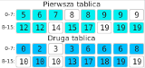

Funkcja specjalne
W osobnym oknie pojawiły się trzy tablice liczb. Na górze znajdują się dwie
początkowe tablice, a na dole wynikowa. Twoja funkcja „scal” powinna
wypełnić tablicę wynikową przepisując zawartość dwóch górnych tabel.
Po zakończeniu przepisywania wartości w tablicy wynikowej powinny być posortowane niemalejąco.
Aby twoja funkcja mogła działać na wyświetlonych tablicach powinieneś skorzystać
z dwóch funkcji specjalnych: „int porownaj(idx1, idx2)” oraz
„void przenies(idxSkad, tabSkad, idxDokad)”. Funkcje są omówione poniżej.
Funkcja „void przenies(idxSkad, tabSkad, idxDokad)”
Funkcja „void przenies(idxSkad, tabSkad, idxDokad)” służy do przenoszenia elementów
z górnych tablic do tablicy wynikowej. Jako parametry funkcja przyjmuje trzy liczby.
Parametr tabSkad może przyjmować tylko wartość 0 albo 1 (inaczej będzie zgłoszony
błąd). Parametr określa z której tablicy chcemy przenieśc element z pierwszej (górnej)
czy drugiej (środkowej). Parametr idxSkad to indeks elementu z tablicy pierwszej
lub drugiej tablicy, natomiast idxDokad określa indeks elementu z tablicy
wynikowej. Oczywiście podane indeksy muszą być liczbami nieujemnymi i muszą być
mniejsze od rozmiarów poszczególnych tablic. Jeśli jakiś parametr nie będzie spełniał
tych warunków zostanie zgłoszony błąd i program przerwie swoje działanie. Po przeniesieniu
elementu pole w tablicy pierwotnej zostaje oznaczone na biało. Nie można wywołać funkcji,
na elemencie którym się już wcześniej przeniosło. Np. wywołanie funkcji przenies(3,0,1)
lub przenies(2,1,1) spowodowałoby błąd (zakładamy że stan tablicy wyraża powyższy rysunek).
Podobnie nie można przenośić elementów do tablicy wynikowej na miejse, w którym
znajduje się już element.Np. wywołanie funkcji przenies(0,0,0) lub przenies(1,1,0)
spowodowałoby błąd.
Funkcja „int porownaj(idx1, idx2)”
Funkcja „int porownaj(idx1, idx2)” służy do porównywania dwóch elementów z górnych tablic.
Jako parametry funkcja przyjmuje dwie liczby całkowite będące indeksami elementów:
idx1 – indeks elementu w pierwszej tablicy, idx2 – indeks elementu w drugiej tablicy.
Jako wynik funkcja zwraca liczbę -1, 0 lub 1. Funkcja zwraca:
- 0 jeśli liczby na podanych indeksach są równe
- -1 jeśli liczba na indeksie idx1 jest mniejsza od tej na indeksie idx2
- 1 jeśli liczba na indeksie idx1 jest większa od tej na indeksie idx2
Oczywiście jeśli choć jeden z podanych indeksów będzie ujemny albo wykroczy poza rozmiar
tablicy, to program zostanie zatrzymany i zostanie wyświetlony błąd wykonania programu.

Dla przykładu poniżej zaprezentowane jest kilka wywołań funkcji „porownaj”.
Przyjmijmy, że stan tablicy wygląda tak jak na obrazku po lewej stronie:
porownaj(1, 4) – wywołanie funkcji zwróci 0porownaj(0, 3) – wywołanie funkcji zwróci 1porownaj(0, 3) – wywołanie funkcji zwróci -1porownaj(3, -2) – wywołanie funkcji zakończy się błędemporownaj(16, 2) – wywołanie funkcji zakończy się błędem